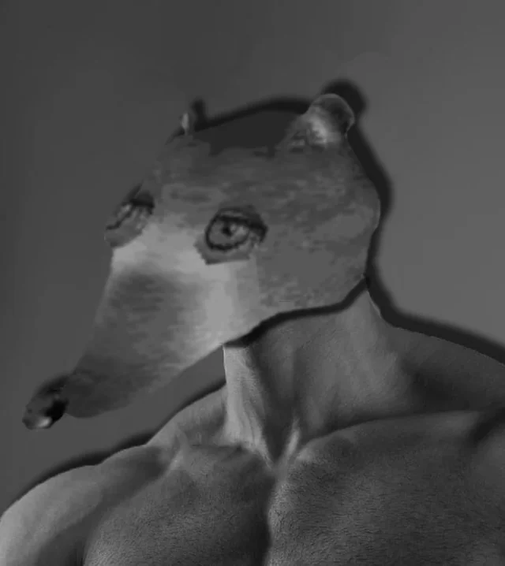

Hi, I’m Cecil.
I’m a nuclear engineering student and researcher interested in instrumentation, radiation detection, and building tools that make lab work easier.
This site is where I keep a lot of projects, research notes, and whatever else I’m working on (plus a little goofiness so it doesn’t feel like a corporate brochure). Keep in mind this isn't intended to be professional nor is it intended to be used in any serious matter.
What I’m into
- Nuclear Detection Instrumentation
- Python, C++, Java, MATLAB, MCNP
- Gamma spectroscopy
- SRIM/TRIM, SUSPRE
- Drum Covers
Right now
- Building out this site
- Working on Nuclear Security Research
- Working on editing 4 covers
- Trying not to break anything important
Recommended Books
Books that have influenced how I think, work, or learn.
Divine Comedy
There is a lot to take from this book, as its not only massive, but also packed full of moral concepts to divulge. The two that I've come to notice the most is that: Love can lead to harmony, but also to ones ruin. Pain that leads to growth is fundamentally different from pain that leads to stagnation.
Dante's Inferno
This book shows what happens when love collapses into fixation, when pain loses its power to teach, and when pain replaces love as a purpose to live. Hell has layers, but through it all no one there is asking for forgiveness. One's sin can be born of love, but it'll always be a twisted form. Forced into a justification used to damn yourself to its misunderstanding.
Crime and Punishment
Along with most books in this list, it helped model my morals as a person. There is something to be said about the intersection of utilitarian thoughts such as with the grandma, and basic social norms that make this a pretty dirty way to shock one's beliefs.
Paradise Lost
While this one (being a book also about religion) seems similar to the other religous books here, its honestly the most different. This ends up being an interrogation of freedom. It really makes you think about when obediance and freedom conflict, but the most direct thing you'll learn is that pain isn't an isolated effort. Sometimes its raught from ignorance, from choice, from justification, and from love.
The Stranger
I had to add this one, if not only because its what turned me completely away from the idea of Nihilism. Not that I was ever interested in it in the first place.
Solaris
Probably one of the best Polish books I've read. This was my first and my favorite as I learned the language.
Title
Give me a suggestion?